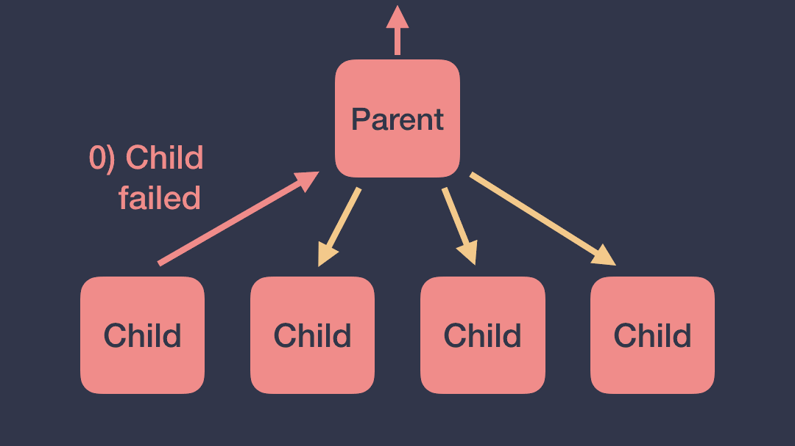
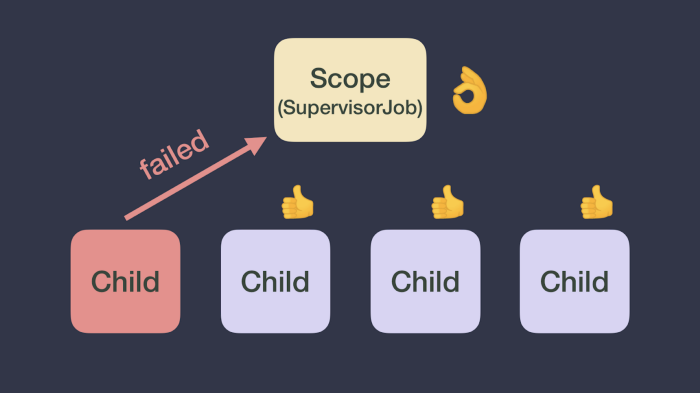
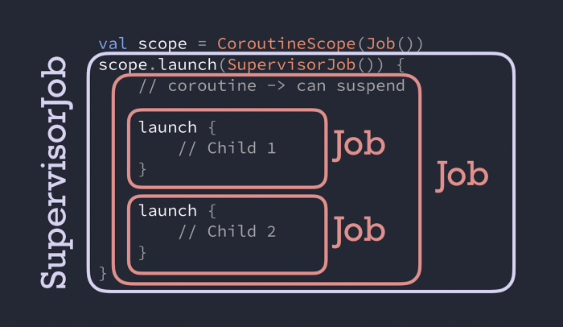

Exceptions in coroutines
All you need to know about exceptions in coroutines
We, developers, usually spend a lot of time polishing the happy path of our app. However, it’s equally important to provide a proper user experience whenever things don’t go as expected. On one hand, seeing an application crash is a bad experience for the user; on the other hand, showing the right message to the user when an action didn’t succeed is indispensable.
Handling exceptions properly has a huge impact on how users perceive your application. In this article, we’ll explain how exceptions are propagated in coroutines and how you can always be in control, including the different ways to handle them.
If you prefer video, check out this talk from KotlinConf’19 by Florina Muntenescu and I:
⚠️ In order to follow the rest of the article without any problems, reading and understanding Part 1 of the series is required.
A coroutine suddenly failed! What now? 😱
When a coroutine fails with an exception, it will propagate said exception up to its parent! Then, the parent will 1) cancel the rest of its children, 2) cancel itself and 3) propagate the exception up to its parent.
The exception will reach the root of the hierarchy and all the coroutines that the CoroutineScope started will get cancelled too.
 An exception in a coroutine will be propagated throughout the coroutines hierarchy
While propagating an exception can make sense in some cases, there are other cases when that’s undesirable. Imagine a UI-related CoroutineScope that processes user interactions. If a child coroutine throws an exception, the UI scope will be cancelled and the whole UI component will become unresponsive as a cancelled scope cannot start more coroutines.
What if you don’t want that behavior? Alternatively, you can use a different implementation of Job, namely SupervisorJob, in the CoroutineContext of the CoroutineScope that creates these coroutines.
SupervisorJob to the rescue
With a SupervisorJob, the failure of a child doesn’t affect other children. A SupervisorJob won’t cancel itself or the rest of its children. Moreover, SupervisorJob won’t propagate the exception either, and will let the child coroutine handle it.
You can create a CoroutineScope like this val uiScope = CoroutineScope(SupervisorJob()) to not propagate cancellation when a coroutine fails as this image depicts:
 A SupervisorJob won’t cancel itself or the rest of its children
If the exception is not handled and the CoroutineContext doesn’t have a CoroutineExceptionHandler (as we’ll see later), it will reach the default thread’s ExceptionHandler. In the JVM, the exception will be logged to console; and in Android, it will make your app crash regardless of the Dispatcher this happens on.
💥 Uncaught exceptions will always be thrown regardless of the kind of Job you use
The same behavior applies to the scope builders coroutineScope and supervisorScope. These will create a sub-scope (with a Job or a SupervisorJob accordingly as a parent) with which you can logically group coroutines (e.g. if you want to do parallel computations or you want them to be or not be affected by each other).
Warning: A SupervisorJob only works as described when it’s part of a scope: either created using supervisorScope or CoroutineScope(SupervisorJob()).
Job or SupervisorJob? 🤔
When should you use a Job or a SupervisorJob? Use a SupervisorJob or supervisorScope when you don’t want a failure to cancel the parent and siblings.
Some examples:
// Scope handling coroutines for a particular layer of my app
val scope = CoroutineScope(SupervisorJob())
scope.launch {
// Child 1
}
scope.launch {
// Child 2
}
In this case, if child#1 fails, neither scope nor child#2 will be cancelled.
Another example:
// Scope handling coroutines for a particular layer of my app
val scope = CoroutineScope(Job())
scope.launch {
supervisorScope {
launch {
// Child 1
}
launch {
// Child 2
}
}
}
In this case, as supervisorScope creates a sub-scope with a SupervisorJob, if child#1 fails, child#2 will not be cancelled. If instead you use a coroutineScope in the implementation, the failure will get propagated and will end up cancelling scope too.
Watch out quiz! Who’s my parent? 🎯
Given the following snippet of code, can you identify what kind of Job child#1 has as a parent?
val scope = CoroutineScope(Job())
scope.launch(SupervisorJob()) {
// new coroutine -> can suspend
launch {
// Child 1
}
launch {
// Child 2
}
}
child#1’s parentJob is of type Job! Hope you got it right! Even though at first impression, you might’ve thought that it can be a SupervisorJob, it is not because a new coroutine always gets assigned a new Job() which in this case overrides the SupervisorJob. SupervisorJob is the parent of the coroutine created with scope.launch; so literally, SupervisorJob does nothing in that code!
 The parent of `child#1` and `child#2` is of type `Job`, not `SupervisorJob`
Therefore, if either child#1 or child#2 fails, the failure will reach scope and all work started by that scope will be cancelled.
Remember that a SupervisorJob only works as described when it’s part of a scope: either created using supervisorScope or CoroutineScope(SupervisorJob()). Passing a SupervisorJob as a parameter of a coroutine builder will not have the desired effect you would’ve thought for cancellation.
Regarding exceptions, if any child throws an exception, that SupervisorJob won’t propagate the exception up in the hierarchy and will let its coroutine handle it.
Under the hood
If you’re curious about how Job works under the hood, check out the implementation of the functions childCancelled and notifyCancelling in the JobSupport.kt file.
In the SupervisorJob implementation, the childCancelled method just returns false, meaning that it doesn’t propagate cancellation but it doesn’t handle the exception either.
Dealing with Exceptions 👩🚒
Coroutines use the regular Kotlin syntax for handling exceptions: try/catch or built-in helper functions like runCatching (which uses try/catch internally).
We said before that uncaught exceptions will always be thrown. However, different coroutines builders treat exceptions in different ways.
Launch
With launch, exceptions will be thrown as soon as they happen. Therefore, you can wrap the code that can throw exceptions inside a try/catch, like in this example:
scope.launch {
try {
codeThatCanThrowExceptions()
} catch(e: Exception) {
// Handle exception
}
}
With
launch, exceptions will be thrown as soon as they happen.
Async
When async is used as a root coroutine (coroutines that are a direct child of a CoroutineScope instance or supervisorScope), exceptions are not thrown automatically, instead, they’re thrown when you call .await().
To handle exceptions thrown in async whenever it’s a root coroutine, you can wrap the .await() call inside a try/catch:
supervisorScope {
val deferred = async {
codeThatCanThrowExceptions()
}
try {
deferred.await()
} catch(e: Exception) {
// Handle exception thrown in async
}
}
In this case, notice that calling async will never throw the exception, that’s why it’s not necessary to wrap it as well. await will throw the exception that happened inside the async coroutine.
When
asyncis used as a root coroutine, exceptions are thrown when you call.await()
Also, notice that we’re using a supervisorScope to call async and await. As we said before, a SupervisorJob lets the coroutine handle the exception; as opposed to Job that will automatically propagate it up in the hierarchy so the catch block won’t be called:
coroutineScope {
try {
val deferred = async {
codeThatCanThrowExceptions()
}
deferred.await()
} catch(e: Exception) {
// Exception thrown in async WILL NOT be caught here
// but propagated up to the scope
}
}
Furthermore, exceptions that happen in coroutines created by other coroutines will always be propagated regardless of the coroutine builder. For example:
val scope = CoroutineScope(Job())
scope.launch {
async {
// If async throws, launch throws without calling .await()
}
}
In this case, if async throws an exception, it will get thrown as soon as it happens because the coroutine that is the direct child of the scope is launch. The reason is that async (with a Job in its CoroutineContext) will automatically propagate the exception up to its parent (launch) that will throw the exception.
⚠️ Exceptions thrown in a
coroutineScopebuilder or in coroutines created by other coroutines won’t be caught in a try/catch!
In the SupervisorJob section, we mention the existence of CoroutineExceptionHandler. Let’s dive into it!
CoroutineExceptionHandler
The CoroutineExceptionHandler is an optional element of a CoroutineContext allowing you to handle uncaught exceptions.
Here’s how you can define a CoroutineExceptionHandler, whenever an exception is caught, you have information about the CoroutineContext where the exception happened and the exception itself:
val handler = CoroutineExceptionHandler {
context, exception -> println("Caught $exception")
}
Exceptions will be caught if these requirements are met:
-
When ⏰: The exception is thrown by a coroutine that automatically throws exceptions (works with
launch, not withasync). -
Where 🌍: If it’s in the
CoroutineContextof aCoroutineScopeor a root coroutine (direct child ofCoroutineScopeor asupervisorScope).
Let’s see some examples using the CoroutineExceptionHandler defined above. In the following example, the exception will be caught by the handler:
val scope = CoroutineScope(Job())
scope.launch(handler) {
launch {
throw Exception("Failed coroutine")
}
}
In this other case in which the handler is installed in a inner coroutine, it won’t be caught:
val scope = CoroutineScope(Job())
scope.launch {
launch(handler) {
throw Exception("Failed coroutine")
}
}
The exception isn’t caught because the handler is not installed in the right CoroutineContext. The inner launch will propagate the exception up to the parent as soon as it happens, since the parent doesn’t know anything about the handler, the exception will be thrown.
Dealing with exceptions gracefully in your application is important to have a good user experience, even when things don’t go as expected.
Remember to use SupervisorJob when you want to avoid propagating cancellation when an exception happens, and Job otherwise.
Uncaught exceptions will be propagated, catch them to provide a great UX!